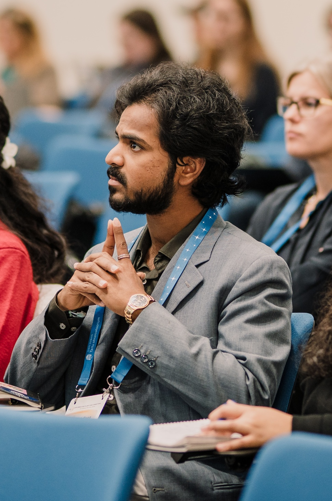

Rocketed out of Aerospace Engineering at SASTRA University, I first slingshotted through the world of high‑resolution spectroscopy of exoplanetary atmospheres, chasing faint starlight for clues about distant worlds. Now I orbit the cosmos from the HFML‑FELIX laboratory in Nijmegen as a PhD candidate, using infrared spectroscopy to probe molecular anions of astrophysical interest and recreate interstellar chemistry in the lab. Somewhere between exoplanet spectra and cold ion beams, I’m trying to connect the dots between what the universe looks like through a telescope and how it actually behaves at the molecular level.
Master's in Astrophysics (2023 – Sept 2025)
– Current Cumulative GPA: 1.70 for 66 ECTS (German system).
B.Tech in Aerospace Engineering (2018 – 2022)
– First class with distinction, GPA: 8.31/10.